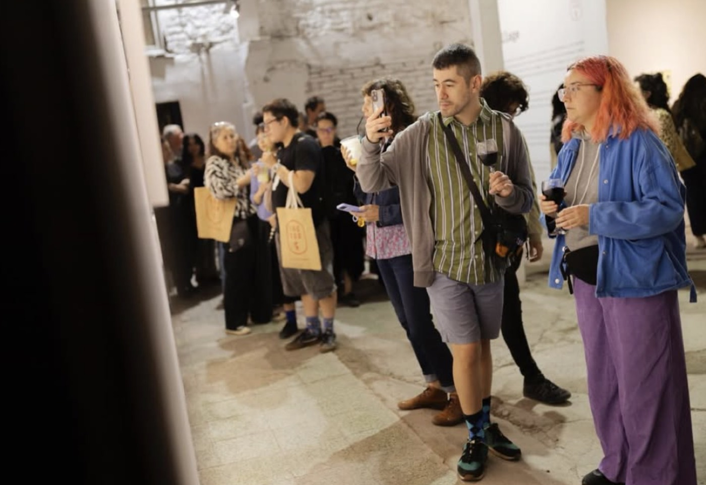

Visita guiada Factoría Franklin
Un recorrido por este hub cultural de Barrio Franklin de la mano de un guía, que acompaña la experiencia con el contexto, la historia y las decisiones detrás de cada espacio.

Desde el año 2022, Factoría Franklin realiza visitas guiadas sin costo por las dependencias e instalaciones que operan dentro del edificio. Los visitantes recorren talleres, locales y laboratorios, y comparten directamente con cada emprendimiento: historias, reseñas, anécdotas y degustaciones.
Te enviaremos la confirmación a tu correo. El punto de reunión es el acceso principal, en Franklin 741.
“Buscamos restaurar y revalorizar una obra ya existente. Respondiendo a la necesidad de crear espacio para la elaboración de las artes y oficio, creando una sinergia entre los distintos emprendedores.”
Factoría Franklin no es solo un lugar donde ocurren exposiciones: es un proyecto de trabajo territorial en Barrio Franklin. Esta visita entrega una mirada que no se consigue recorriendo el espacio por cuenta propia.